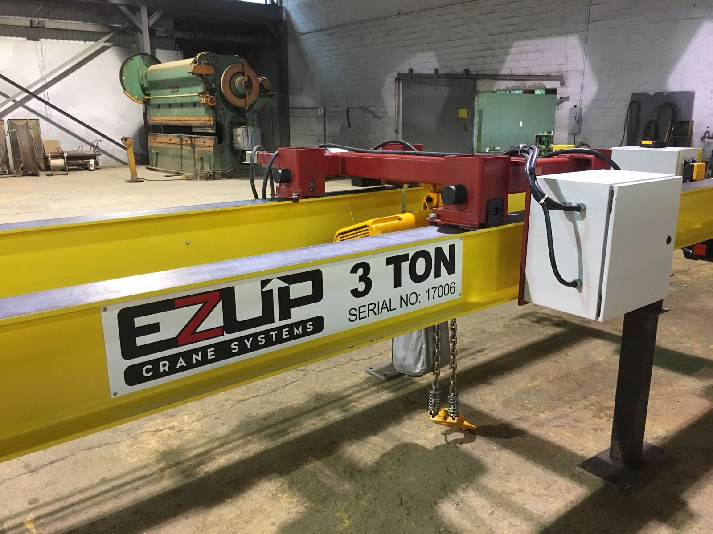

Cranes designed by a crane engineer.
The EZUP team has been designing, building and installing overhead cranes for more than 30 years. EZUP Crane Systems was founded by Brad J. Ayers, PE, who served as president of Platnick Crane from 1999 to 2015.
Brad is a licensed professional engineer in Virginia, West Virginia and North Carolina, and principal of Ayers Engineering, LLC. Every EZUP system, and every structure it hangs from or stands on, is checked by an engineer before it ships.
EZUP grew out of a gap in the market. Typical workstation cranes top out around 2 tons, run on short spans and are pushed by hand. Manufacturers kept asking for more capacity, longer spans and powered, radio-controlled travel. The EZUP crane was built to answer that, and the Demag KBK line now covers the lighter work below it.
